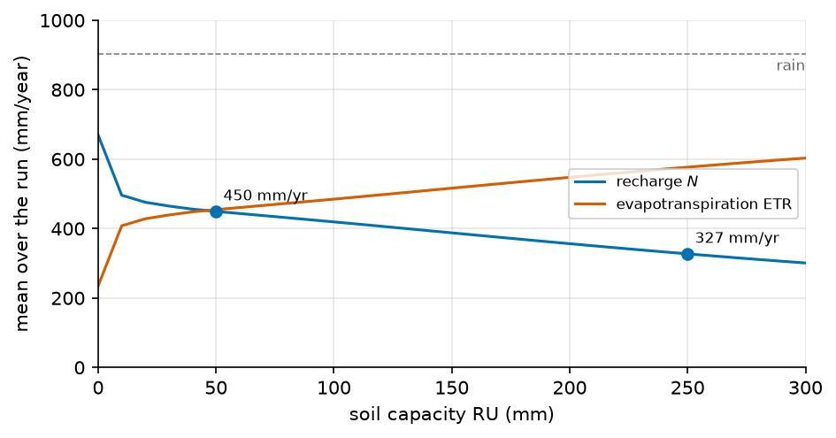

The daily soil reservoir#
Each day, a soil store takes the rain, loses water to evapotranspiration, and sends the water it cannot hold down to the water table. This page gives the equations the code solves, what they assume, and where they stop being true. It does not say how to set up a run: for that, see step 6 of the staircase.
Note
Scope. The reservoir runs under MODFLOW 6 only. A file that declares
flow.sinks_sources.recharge.soil with another flow solver is refused
when it is read. The equations below are the ones of
hydromodpy/physics/hydrology/soil_reservoir/kernel.py.
The model in one picture#
Notation of this page
Every column of the reservoir is independent, so the column index is left out. \(t\) is the day. Stores are in mm of water per unit of unsealed area, fluxes in mm/day. Every symbol of the site is on Notation.
Symbol |
Meaning |
Unit |
Set by |
|---|---|---|---|
\(t\) |
time; on the soil page, the day |
s |
|
\(N\) |
recharge rate, positive into the aquifer |
m/s |
|
\(P_t\) |
rain of day \(t\) |
mm/day |
|
\(E_t\) |
ETP of day \(t\), as loaded |
mm/day |
|
\(\mathrm{RU}\) |
capacity of the soil store |
mm |
|
\(\alpha\) |
share of RU above which evaporation is not limited |
||
\(k_c\) |
factor applied to the loaded ETP |
||
\(f\) |
sealed share of the area |
||
\(b\) |
share of the rain that skips the soil |
||
\(\tau\) |
time constant of the transit store |
day |
|
\(\mathrm{CN}\) |
SCS curve number |
||
\(\tau_q\) |
time constant of the curve-number runoff store |
day |
|
\(L\) |
pure delay of the curve-number runoff |
day |
|
\(S_t, R_t, C_t\) |
soil, transit and curve-number stores at the end of day \(t\) |
mm |
state, not a key |
\(Q_t\) |
curve-number runoff of day \(t\) |
mm/day |
derived |
\(O_t\) |
water that reaches the water table, per unit of unsealed area |
mm/day |
derived |
\(w_t\) |
wetness of the soil the day before, a share of RU |
derived |
|
\(\sigma_t\) |
SCS retention of day \(t\) |
mm |
derived |
\(B_t\) |
rain that skips the soil on day \(t\) |
mm/day |
derived |
\(W_t\) |
water in the soil after the rain, before any evaporation |
mm |
derived |
\(\psi_t\) |
evaporation stress, the share of \(k_c E_t\) the soil can meet |
derived |
|
\(\mathrm{ETR}_t\) |
evapotranspiration of the soil on day \(t\) |
mm/day |
derived |
\(X_t, I_t\) |
overflow of the soil, and inflow of the transit store (\(X_t + B_t\)) |
mm/day |
derived |
\(Q^r_t, Q^L_t\) |
curve-number runoff after its store, and after its delay |
mm/day |
derived |
The state before the first day, \(S_0\), \(R_0\) and \(C_0\), comes from
spinup (see
The starting state).
The daily balance#
The code applies the steps below in this order, for every column and every day.
1. Curve-number runoff (optional)#
Read only when curve_number
is set, between 30 and 98. Without it, \(Q_t = 0\) and the step costs nothing:
the result is the same, bit for bit, as without the term.
The runoff is the SCS curve-number runoff as the HELP model uses it [Schroeder and others, 1994]. The conversion of a class II number to the dry (class I) and wet (class III) numbers is the one of Chow et al. [1988], equations 5.5.6 and 5.5.7. The code makes these choices:
The number in the file is the class II one. The code derives the other two.
The wetness of the soil is the store at the end of the day before, as a share of its capacity (next equation).
The retention \(\sigma_t\), in mm, moves linearly with \(w_t\) between its value at the dry number (\(w_t = 0\)) and its value at the wet number (\(w_t = 1\)) [Schroeder and others, 1994].
The initial abstraction is \(0.2\,\sigma_t\), with no other choice.
The rain that infiltrates is \(P_t - Q_t\). The runoff \(Q_t\) is taken before the soil sees the rain, so the soil gets less of it.
2. Bypass#
A constant share \(b\) of the infiltrating rain skips the soil. The rest is added to the store:
Here \(b\) is bypass_fraction.
\(W_t\) is the water in the soil after the rain and before any evaporation.
3. Evapotranspiration#
The soil evaporates at the full rate \(k_c E_t\) while it holds more than \(\alpha\,\mathrm{RU}\). Below that, the rate falls linearly with the store. It can never exceed what the soil holds:
with \(\psi_t = 1\) if \(\mathrm{RU} = 0\). The two symbols are
alpha and
kc, and
ru is the capacity. \(\alpha\) is the \(1 - p\) of FAO-56 [Allen et al., 1998] and the \(LP\) of HBV
[Seibert and Vis, 2012].
4. Overflow#
What exceeds the capacity leaves the soil. Nothing else does:
5. Transit through the unsaturated zone#
The overflow and the bypass enter one linear reservoir of time constant
\(\tau\), transit_time.
The inflow \(I_t = X_t + B_t\) is taken as constant over the day, and the
reservoir is integrated exactly over that day:
\(O_t\) is the water that reaches the water table. If \(\tau = 0\), then \(O_t = I_t\) and \(R_t = R_{t-1}\).
6. Routing of the curve-number runoff#
The runoff \(Q_t\) goes through the same exact reservoir, with the time
constant \(\tau_q\), runoff_time,
and its own store \(C_t\). The routed runoff is called \(Q^r_t\). If \(\tau_q = 0\),
then \(Q^r_t = Q_t\).
7. Delay of the curve-number runoff#
A pure delay of \(L\) days, runoff_lag,
follows. Write \(L = n + \varphi\) with \(n\) a whole number of days and
\(0 \le \varphi < 1\). The delayed runoff is a linear interpolation between two
whole-day shifts:
A day that falls before day 1 of the run reads zero, or, with
spinup = "first_year", the days at the end of the last repeated first year,
which stand for the days before the run.
The delay is not a store: it moves water in time and keeps its volume, except
the part pushed beyond the last day of the run.
8. Fluxes per unit of column area#
The stores above are per unit of unsealed area. The sealed share \(f\),
impervious_fraction,
gets no infiltration and no evaporation. The fluxes of the column are:
\(N_t\) is the recharge MODFLOW 6 receives. The residual ETP is the demand \(k_c E_t\) that the soil could not meet.
In the code: soil_step.
Three days, by hand#
The numbers below come from one call of soil_step, (6) to
(12), for each day, with \(\mathrm{RU} = 150\) mm, \(\alpha = 0.6\), \(k_c = 1\),
\(f = b = \tau = 0\). The last day adds a curve number of 80 with \(\tau_q = 0\). Its store is
full, so \(w = 1\) and \(\sigma\) is the retention at the wet number, \(\mathrm{CN}_\mathrm{III} = 90.2\).
Dry day |
Overflow |
Curve number |
|
|---|---|---|---|
\(S_{t-1}\) (mm) |
40 |
145 |
150 |
\(P_t\), \(E_t\) (mm/day) |
0, 4 |
30, 3 |
30, 3 |
What happens |
\(W = 40\) is below \(\alpha\,\mathrm{RU} = 90\), so \(\psi = 0.444\) |
\(W = 175\), evaporation 3, \(175 - 3 - 150 = 22\) leaves |
\(w = 1\), \(\sigma = 27.6\), \(Q = 11.50\), then \(W = 168.50\) |
ETR (mm/day) |
1.78 |
3.00 |
3.00 |
Recharge \(N_t\) (mm/day) |
0 |
22.00 |
15.50 |
Runoff (mm/day) |
0 |
0 |
11.50 |
\(S_t\) (mm) |
38.22 |
150 |
150 |
Residual ETP (mm/day) |
2.22 |
0 |
0 |
On the third day, \(30 = 3.00 + 15.50 + 11.50\): the balance closes with no change of store.
The balance closes#
Over any run, per column and per day:
where \(\Lambda_t\) is the running total of runoff held back by the delay
(runoff_lag). The
function balance_residual computes the difference between the two sides. On
400 days of random rain and ETP over three columns, with a sealed share, a
bypass, a transit time, a curve number and a delay all switched on, the largest
residual is under \(10^{-13}\) mm: rounding error only.
The starting state#
With spinup = "none", the soil starts full and the other stores empty:
\(S_0 = \mathrm{RU}\), \(R_0 = C_0 = 0\).
With spinup = "first_year", the default, the first 365 days of rain and ETP
are run again and again, starting from that full soil. The loop stops when no
store of any column moves by \(0.1\) mm or more over one repetition, or after 20
repetitions. The state at the end of the last repetition is \(S_0\), \(R_0\) and
\(C_0\). If 20 repetitions are not enough, the run stops with an error. A run
shorter than 365 days is refused with this option.
Columns and capacity classes#
Without data.soil_capacity, each cell of the rain and ETP grid is one
column and the same RU applies to all. With it, the pixels of the raster in
each cell are sorted by capacity and cut into ten classes of equal pixel
count. Each class is a column, with a capacity
\(\mathrm{RU} \times (\text{class mean} / \text{raster mean})\). The value
given in the file is therefore the mean capacity, and the raster only spreads
it. The basin value of any flux gives every cell the same weight, and every
class of a cell its share of the pixels.
How much recharge, by capacity#
\(\mathrm{RU}\) is the parameter the recharge depends on most. A larger store keeps more of the winter rain for the summer, when the plants take it back, so the recharge falls as the capacity grows.

Fig. 17 Recharge and evapotranspiration against \(\mathrm{RU}\), from
spinup_state and run_soil_balance on a synthetic six-year climate
(904 mm of rain and 698 mm of ETP per year, the other keys at their
defaults). The two curves sum to the rain over the run.#
Example 04 prints the same ladder on its own forcing, the SIM2 rain and ETP of 2015 to 2020 over its catchment:
\(\mathrm{RU}\) (mm) |
50 |
100 |
150 |
200 |
250 |
|---|---|---|---|---|---|
Recharge (mm/year) |
443 |
392 |
356 |
325 |
295 |
Over the same days the rain is 904 mm/year, the ETP 698 mm/year and the gauged
discharge 327 mm/year. From 50 to 250 mm the recharge loses a third. To set the
capacity, see ru.
Assumptions#
The rain of a day reaches the soil before it evaporates, the same day. The evaporation stress of day \(t\) is computed on the store after the rain.
The rain and the ETP are constant over the day.
All the water above RU leaves the soil as drainage. There is no saturation-excess runoff term in the kernel.
The bypass is a constant share of the infiltrating rain, the same in every season.
The unsaturated zone is one linear reservoir per column, with one time constant for the whole catchment.
The sealed share receives rain and nothing else: it neither infiltrates nor evaporates, and its runoff is immediate.
The curve-number runoff reads the wetness of the day before, not the one after the rain.
Columns do not exchange water with each other.
One value of \(\alpha\), \(k_c\), \(f\), \(b\), \(\tau\), CN, \(\tau_q\) and \(L\) applies to the whole catchment and to the whole run. Only RU varies, through the capacity classes.
The rain is one total grid: snow counts as rain on the day it falls. The file is refused unless
components = ["total"].
Limits#
No feedback from the aquifer. The soil store never reads the water table. A shallow water table does not reduce the capacity. The only link back is the residual ETP, which MODFLOW 6 may draw from the water table (Where the results go).
Daily forcing only. The rain and the ETP must have one value per day and per cell, with no gap and no negative value, on a standard calendar, with the rain and the ETP on the same grid, in the CRS of the model. Otherwise the run stops before the reservoir is computed.
No groundwater memory. The transit time is limited to 30 days, so that the slow response comes from MODFLOW 6 and not from this reservoir.
Curve number and delay. \(\tau_q\) and \(L\) are read only when
curve_numberis set. A fractional delay spreads a one-day pulse over two days. The part of the delayed runoff that falls after the last day of the run is not represented.First period. A steady first stress period is refused, since it would hold the recharge of one day only.
SIM2 drainage is not a summer reference across 2016. Over the catchment of example 04, the SIM2 drainage (DRAINC) never falls below about 0.2 mm/day from 2016 on: its 30-day minimum is 0.29, 0.23 and 0.30 mm/day in 2016, 2017 and 2018, against 0.00 to 0.04 mm/day in 2012 to 2015, on all nine cells of the grid alike. A recharge from this reservoir falls to zero in a dry summer; compare it with the SIM2 drainage period by period, never across that step.
No other runoff. Water that leaves saturated ground is not a term of this model. In a run, it leaves through the drains of MODFLOW 6.
Where the results go#
The reservoir hands three daily grids to the rest of the run, in mm/day on the cells of the rain grid.
The recharge goes to the MODFLOW 6 recharge package. A file that also loads a recharge, through
data.types, is refused.The residual ETP goes to the MODFLOW 6 evapotranspiration package, which draws it from the water table. The rate falls linearly to zero at
flow.sinks_sources.etp.extinction_depthbelow the drain elevation of the cell. This needs"etp"inflow.active_sinks_sources.The runoff goes where a loaded runoff would go: the stream networks, the lakes, and the discharge that a calibration compares with the gauge. A file that also loads a runoff, through
data.types, is refused, because the same water would be counted twice.
Parameters of this page#
The fields below are the ones that appear in the equations. Open a row for its card.
A soil section that uses the curve-number branch. Its keys link to their card.
1[flow.sinks_sources.recharge.soil] 2ru = "150 mm" 3alpha = 0.6 4kc = 1.0 5impervious_fraction = 0.02 6bypass_fraction = 0.0 7transit_time = "3 days" 8curve_number = 78 9runoff_time = "1 day" 10runoff_lag = "0.5 days" 11spinup = "first_year"
Checked by#
The tests that import the code of this page. The box is generated: a new test appears here on the next build.
57 test files import hydromodpy.physics.hydrology.soil_reservoir, hydromodpy.simulation.soil_recharge. Their names say what they check.
validation: 1
integration: 1
- The soil recharge reaches modflow6 cell by cell.
unit: 55
- Curve number and runoff time are calibrable. calibration
- Runoff lag is calibrable. calibration
- Soil bounds beyond the registry are refused at load. calibration
- The impervious fraction is calibrable. calibration
- The replaced recharge rate is not calibrated in soil mode. calibration
- The soil capacity is offered to the calibration as soil ru. calibration
- The transit time does not borrow a conductivity range. calibration
- Two trials scored discharge differs by curve number. calibration
- Two trials scored discharge differs by impervious runoff. calibration
- Two trials scored discharge differs by runoff lag. calibration
- A soil run does not open on a one period steady state. config
- The soil reservoir snippet validates. docs
- A fractional runoff lag interpolates and conserves the total. physics
- A recharge rate beside a soil reservoir is refused. physics
- A repeated first year needs a year. physics
- A soil parameter outside its range is refused by name. physics
- A soil run does not open on a one period steady state. physics
- A soil with no capacity passes the rain through. physics
- A spinup that cannot settle says so. physics
- A zero crop coefficient evaporates nothing. physics
- An impulse through the transit store follows the exponential reservoir. physics
- An impulse without transit time recharges the same day. physics
- An integer runoff lag shifts the runoff series by whole days. physics
- Curve number off reproduces the kernel bit for bit. physics
- No rain recharges nothing. physics
- One step at a time gives the whole run. physics
- Runoff lag zero reproduces the kernel bit for bit. physics
- The annual budget sums the days of each year. physics
- The bypass reaches the recharge on a dry soil. physics
- The curve number balance closes with routing. physics
- The curve number runoff follows the soil wetness. physics
- The rain falls before the soil evaporates. physics
- The runoff time routes the curve number runoff. physics
- The sealed share neither infiltrates nor evaporates. physics
- The soil balance closes to machine precision. physics
- The soil balance still closes with a runoff lag. physics
- The soil section reads as a request. physics
- The spinup settles on a year that refills the soil. physics
- A safran cell without capacity is refused. simulation
- Capacity classes recharge more than their mean. simulation
- One capacity class gives the uniform soil. simulation
- The gauged discharge line reads a single station. simulation
- The raster spreads the declared ru. simulation
- The ru ladder recharge falls as the capacity grows. simulation
- The soil budget block reads in mm per year. simulation
- The soil columns map back to their cells. simulation
- The soil forcings are one grid per quantity. simulation
- The soil reads its forcing without touching it. simulation
- The soil refuses forcings it cannot pair. simulation
- The soil that cannot settle stops the run. simulation
- A soil run persists its recharge where sim2 would. workflow
- A soil run refuses a one period steady start at run time. workflow
- A soil run refuses a spinup shorter than a year at run time. workflow
- The binder sends the soil recharge etp and runoff. workflow
- The soil budget is printed once by the data step. workflow
In the code#
What |
Where |
|---|---|
The daily step and the balance |
|
The starting state |
the same file, |
What a file may say, and its ranges |
|
Grids in, columns, grids out |
|
See also#
Step 6: the soil reservoir: a run with the soil reservoir.
flow.sinks_sources.recharge.soil: the section as a reference page.Theory: the other theory pages.